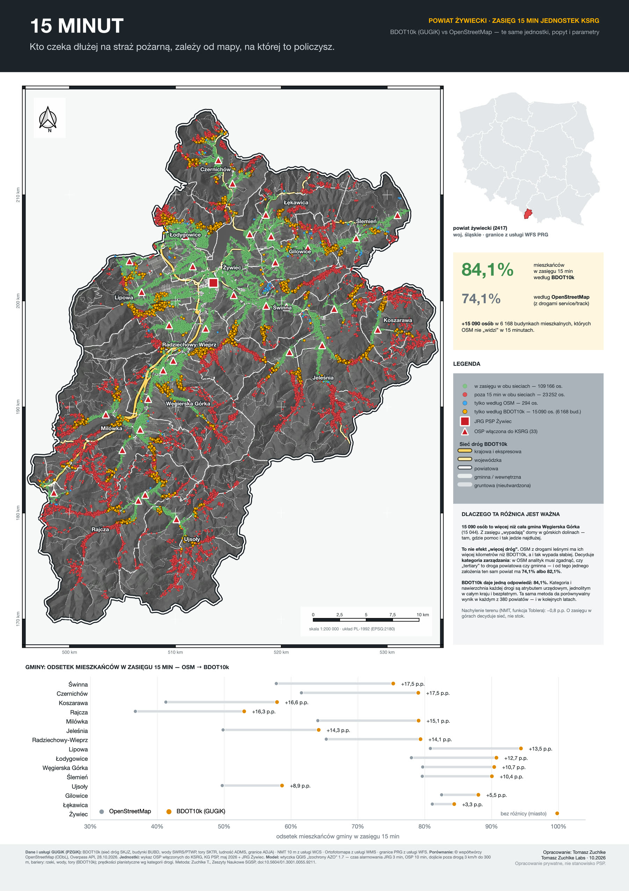
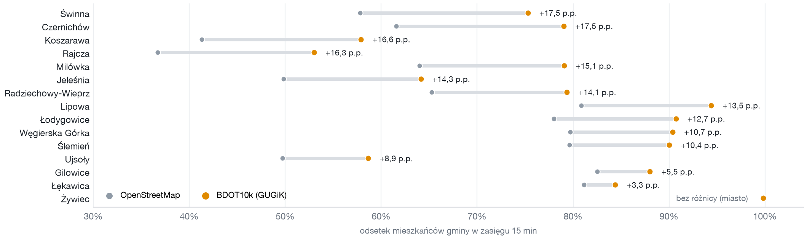

Kto czeka dłużej na straż pożarną, zależy od mapy, na której to policzysz.
Dostępność ratownicza powiatu żywieckiego policzona na danych i usługach GUGiK — z otwartym narzędziem dla każdego powiatu. Tomasz Zuchlke · 2026
Policzyłem, jaki odsetek mieszkańców powiatu żywieckiego jednostki KSRG — JRG Żywiec i 33 OSP włączone do KSRG — są w stanie osiągnąć w 15 minut od zgłoszenia. Tę samą analizę wykonałem dwa razy, z tymi samymi jednostkami, mieszkańcami i parametrami. Różnią się wyłącznie dane o drogach.
| sieć dróg | ≤ 8 min | ≤ 15 min | w zasięgu 15 min |
|---|---|---|---|
| OpenStreetMap (filtr jak w artykule) | 12,6% | 71,8% | 106 097 |
OpenStreetMap + service/track | 13,3% | 74,1% | 109 460 |
OpenStreetMap, tertiary = 50 km/h (test czułości) | 17,6% | 82,1% | 121 345 |
| BDOT10k — drogi publiczne | 14,1% | 76,6% | 113 149 |
| BDOT10k — wszystkie drogi | 15,2% | 84,1% | 124 256 |
| BDOT10k + dojście zależne od nachylenia (NMT, Tobler) | 14,9% | 83,3% | 123 108 |
Ludność w modelu: 147 802 osoby w 52 278 budynkach mieszkalnych.

Najprostsze wytłumaczenie — że BDOT10k ma po prostu więcej dróg — nie jest prawdziwe. Po dołożeniu do OpenStreetMap dróg leśnych i dojazdowych sieć OSM liczy w tym powiecie więcej kilometrów niż BDOT10k, a wynik rośnie tylko o 2,3 p.p.
Decyduje kategoria zarządzania drogi. W OpenStreetMap analityk musi założyć, czym jest
tertiary — drogą powiatową czy gminną. Od tego jednego założenia ten sam powiat ma
74,1% albo 82,1%, bez zmiany choćby jednego metra sieci. BDOT10k niesie kategorię
i nawierzchnię każdej drogi jako atrybut urzędowy, jednolity w całym kraju.

Z BDOT10k pochodzą: sieć dróg z kategorią zarządzania i nawierzchnią, budynki mieszkalne, ludność miejscowości, granice gmin oraz cieki, wody i tory jako bariery. OpenStreetMap posłużył wyłącznie jako punkt odniesienia w porównaniu; wykaz jednostek pochodzi z KG PSP, bo GUGiK nie prowadzi rejestru jednostek ratowniczych.
Analizę liczy bezpłatna wtyczka QGIS „Izochrony AZO" (kod otwarty, licencja MIT). Od wersji 1.8 wtyczka sama pobiera dane z GUGiK: podajesz numer TERYT powiatu, a ona ściąga BDOT10k z opendata i NMT z usługi WCS, po czym składa gotowy komplet warstw.
Wtyczka jest w oficjalnym repozytorium QGIS i ma tam 429 pobrań; wersja 1.8 z pobieraniem danych GUGiK czeka na zatwierdzenie przez moderatorów repozytorium, a jej kod jest dostępny na GitHubie już teraz.
Dzięki temu to opracowanie da się powtórzyć dla dowolnego z 380 powiatów — bez ręcznego przygotowywania danych, bez kluczy API i bez danych komercyjnych. Metoda opisana w recenzowanym artykule: Zeszyty Naukowe SGSP, doi:10.5604/01.3001.0055.9211.
Model liczy czas dojazdu liczony od zgłoszenia: obejmuje czas alarmowania — 3 minuty dla JRG i 10 minut dla OSP (wartości KG PSP) — oraz przejazd drogami i dojście poza drogą. ⚠ Te 3 i 10 minut to założenia ryczałtowe, jednakowe dla wszystkich jednostek, a nie czasy zmierzone dla konkretnych zdarzeń; realna zbiórka ratowników OSP bywa i krótsza, i znacznie dłuższa. Model nie obejmuje natomiast czasu dysponowania przez stanowisko kierowania ani warunków drogowych w danej chwili (pogoda, ruch, roboty). Prędkości są planistyczne, przypisane kategorii drogi, a nie zmierzone w ruchu. Ludność jest rozłożona na budynki mieszkalne proporcjonalnie, w granicach miejscowości — to przybliżenie, nie spis. Wynik dla OpenStreetMap zależy od dnia pobrania; BDOT10k ma datę wydania.